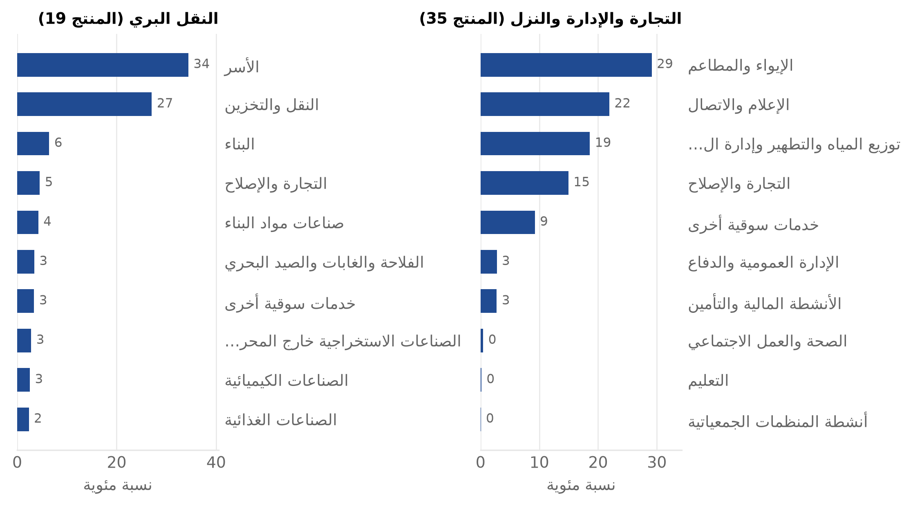
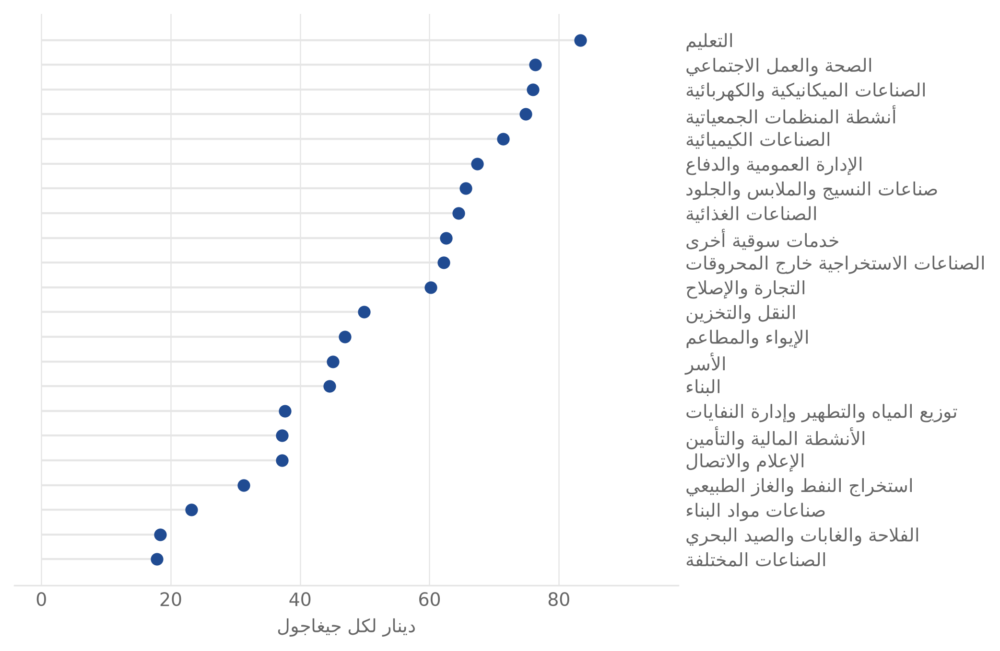
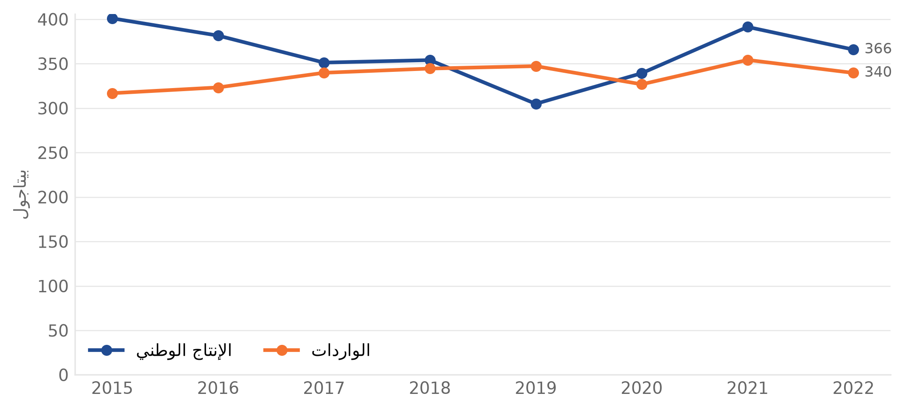
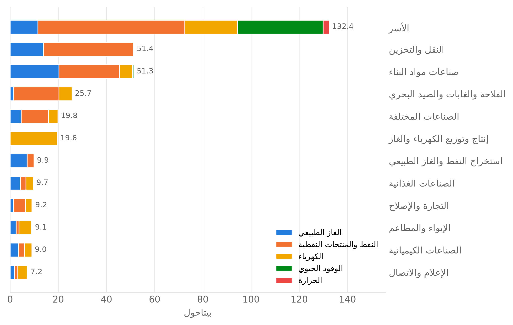
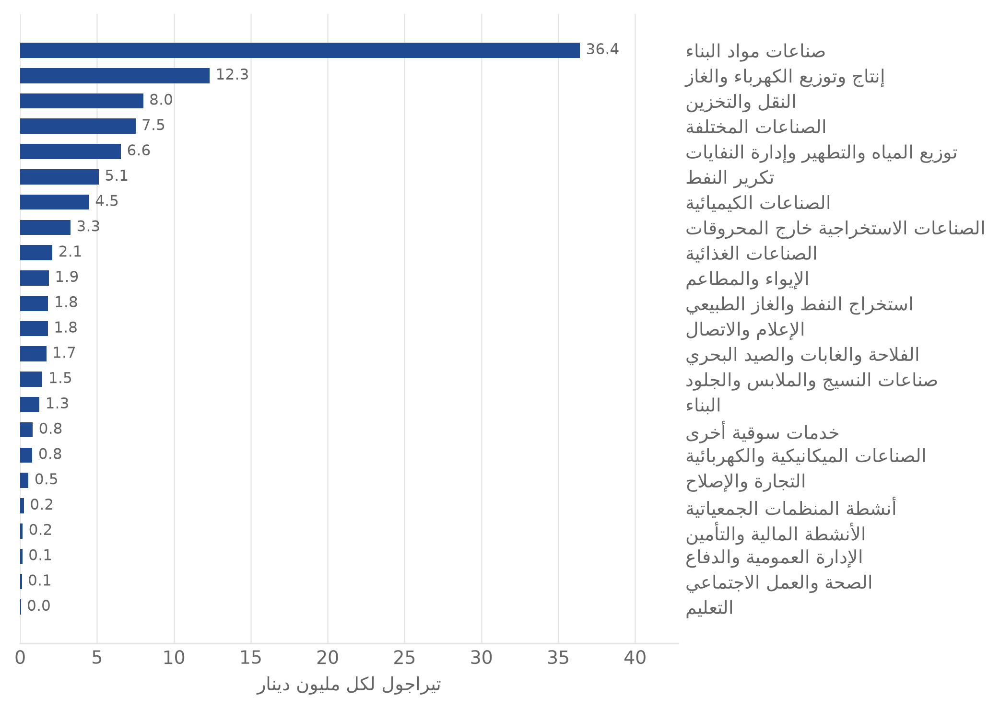
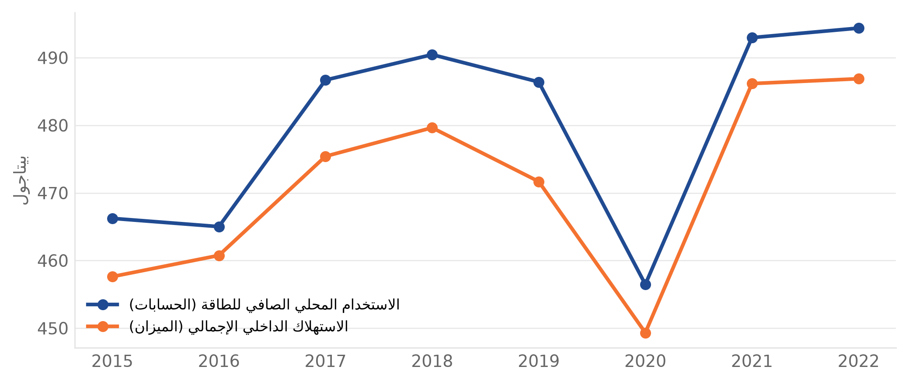

| البرنامج | الغرض |
|---|---|
| extract/01_extract_energy_balances.py | موازين الطاقة للمرصد في صيغة طويلة برموز ثابتة |
| extract/02_extract_crt_inventory.py | الجداول المشتركة للإبلاغ في جرد غازات الاحتباس الحراري |
| extract/03_extract_supply_use_tables.py | جداول الموارد والاستخدامات في الحسابات القومية |
| pefa/10_map_balance_to_iea_template.py | الميزان التونسي في نموذج الوكالة الدولية للطاقة لأداة الصندوق |
| pefa/11_build_activity_keys.py | إسناد كل تدفق من الميزان إلى فروع الحسابات القومية |
| pefa/12_build_concordance_matrix.py | مصفوفة التوافق التونسية، واحدة لكل سنة |
| pefa/13_compile_pefa_tables.py | الجداول المادية للموارد والاستخدامات، مع التحقق بأداة الصندوق |
| pefa/14_check_pefa_and_indicators.py | اختبارات التوازن والمعقولية والمؤشرات |
| pefa/15_export_pefa.py | مصنفات إكسل بالإنجليزية والفرنسية والعربية |
| report/30_publish_tables.py | جداول وتسميات للوثائق ومستكشف البيانات |
حسابات التدفقات المادية للطاقة في تونس
المفاهيم وطرق الإعداد والنتائج، من 2015 إلى 2022
الملخص
تسجل حسابات التدفقات المادية للطاقة (PEFA)، بالتيراجول، كيف تدخل الطاقة إلى الاقتصاد التونسي، وأي فروع النشاط والأسر تنتجها وتستخدمها، وكيف تعود إلى البيئة. وهي تعرض معلومات ميزان الطاقة الوطني في صيغة الحسابات القومية، فيمكن مقارنة استخدام الطاقة بالإنتاج والقيمة المضافة والتشغيل، ويمكن أن تستند حسابات الانبعاثات إلى التوزيع نفسه. تشرح هذه الوثيقة المفاهيم، وتصف كل خطوة من خطوات إعداد قابل للتكرار للحسابات من 2015 إلى 2022، وتعرض النتائج الأولى.
في سنة 2022، حصل الاقتصاد على 366 بيتاجول من المنتجات الطاقوية من الإنتاج الوطني و340 بيتاجول من الواردات. وغطت الواردات 62% من موارد الغاز الطبيعي. وكانت الأسر أكبر مستخدم نهائي، إذ استأثرت بـ34% من الطاقة المستخدمة لأغراض طاقوية، تليها فروع «النقل والتخزين» و«صناعات مواد البناء». وبلغ الاستخدام المحلي الصافي للطاقة، وهو المؤشر الرئيسي للحسابات، 494 بيتاجول. ويعيد الإعداد إنتاج نتائج أداة PEFA Converter لصندوق النقد الدولي بفارق لا يتجاوز 5e-13 بيتاجول، وكل خيار من خيارات التوزيع جدول يمكن للمحاسبين القوميين مراجعته وتعديله.
1 مقدمة
إحصاءات الطاقة في تونس غنية. ينشر المرصد الوطني للطاقة والمناجم كل سنة ميزانًا وطنيًا للطاقة يبين موارد كل منتج طاقوي وتحويله واستخدامه حسب القطاعات الكبرى (Bouazizi, 2026). أما الحسابات القومية، التي يعدها المعهد الوطني للإحصاء، فتصف الاقتصاد نفسه بالقيمة من خلال جداول الموارد والاستخدامات حسب فروع النشاط. ويتكلم النظامان لغتين مختلفتين. فالميزان يجمع المستخدمين حسب القطاع التقني، مثل «النقل البري» أو «التجارة والإدارة والنزل»، في حين تجمعهم الحسابات القومية حسب فروع النشاط، مثل النقل البري للبضائع والأشخاص أو الإيواء أو الإدارة العمومية. ويسجل الميزان ما يحدث على التراب الوطني، في حين تسجل الحسابات القومية ما تفعله الوحدات المقيمة أينما كانت.
تربط حسابات التدفقات المادية للطاقة بين النظامين. وهي جزء من نظام المحاسبة البيئية والاقتصادية، وهو المعيار الدولي الذي يوسع الحسابات القومية لتشمل البيئة (United Nations وآخرون, 2014; United Nations, 2019). وعندما تُسجَّل الطاقة حسب فروع النشاط، تجد الأسئلة المهمة للسياسات العامة إجابات متسقة: أي الفروع تستخدم أكبر قدر من الطاقة لكل دينار من القيمة المضافة، وما نصيب النقل من الطاقة التي تستخدمها الأسر، وكيف تؤثر التغيرات في هيكل الاقتصاد في الطلب على الطاقة.
وقد طور صندوق النقد الدولي أداة في برنامج إكسل لهذا التحويل، هي PEFA Converter، تطبق مصفوفة توافق على ميزان طاقة معروض بصيغة الوكالة الدولية للطاقة (International Monetary Fund, 2024; Pegoue, 2026). وتتبع هذه الوثيقة منطقها خطوة بخطوة. وتُنفَّذ الحسابات بسلسلة من البرامج النصية بلغة Python في المجلد https://github.com/renatovargas/tun-pefa-aea/tree/main/scripts، مرتبة في الجدول 1 حسب ترتيب تنفيذها. وتحيل كل خطوة من قسم المنهجية إلى بطاقة البرنامج الخاص بها في الملحق الأول، التي تشرح ما يقرؤه البرنامج وما يفعله وما يكتبه. وينفذ الملف run_pipeline.py السلسلة كلها في أقل من نصف دقيقة، ويتوقف كل برنامج إذا فشل أحد اختباراته. أما حسابات الانبعاثات، التي تعيد استخدام عدة خطوات من هذه الخطوات، فتصفها وثيقة مرافقة.
2 المفاهيم
2.1 الطاقة في نظام المحاسبة البيئية والاقتصادية
يتتبع النظام الطاقة عندما تعبر الحد الفاصل بين البيئة والاقتصاد وعندما تنتقل داخل الاقتصاد. ويميز بين ثلاثة أنواع من التدفقات (United Nations, 2019، الفقرات 2.14 إلى 2.21). الطاقة المستمدة من المدخلات الطبيعية تنتقل من البيئة إلى الاقتصاد، مثل المحتوى الطاقوي للنفط الخام عند استخراجه، أو الطاقة الشمسية التي تلتقطها لوحة. والمنتجات الطاقوية تتداول داخل الاقتصاد، فهي تُنتج وتُتبادل وتُحوَّل وتُستخدم، مثل الغاز الطبيعي والغازوال والكهرباء. وبقايا الطاقة تعود إلى البيئة، مثل الحرارة المنبعثة عند احتراق الوقود، والكهرباء الضائعة في الشبكة، والغاز المحروق عند فوهة البئر.
وتحترم الحسابات مبدأ حفظ الطاقة. فالطاقة لا تُخلق ولا تفنى، وإنما تتحول من شكل إلى آخر. فعندما يُحرق الغاز الطبيعي في محطة كهرباء، يصبح جزء من محتواه الطاقوي كهرباء، أي منتجًا طاقويًا، ويضيع الباقي في شكل حرارة، أي بقايا طاقة. وعندما تستخدم أسرة هذه الكهرباء، ينتهي محتواها الطاقوي بدوره حرارة متبقية. ولهذا يقابل كل استخدام للطاقة في الحسابات بقايا بالمقدار نفسه، وتفوق مجاميع جداول الموارد والاستخدامات الطاقة التي يستهلكها البلد فعلًا. ويبين الشكل 1 هذه التدفقات.
flowchart LR ENV1["البيئة"] -- "المدخلات الطبيعية<br/>(نفط خام، غاز، شمس، رياح، كتلة حيوية)" --> IND["فروع النشاط المقيمة"] ROW1["بقية العالم"] -- "واردات<br/>المنتجات الطاقوية" --> IND IND -- "منتجات طاقوية" --> IND IND -- "منتجات طاقوية" --> HH["الأسر"] IND -- "صادرات" --> ROW2["بقية العالم"] IND -- "بقايا الطاقة<br/>(خسائر، حرارة)" --> ENV2["البيئة"] HH -- "بقايا الطاقة" --> ENV2
2.2 جداول الموارد والاستخدامات بالوحدات المادية
تُعرض الحسابات في جدولين لهما الأسطر نفسها (United Nations وآخرون, 2014، القسم 3.3). يبين جدول الموارد من يوفر كل تدفق: البيئة توفر المدخلات الطبيعية، وفروع النشاط تنتج المنتجات الطاقوية والبقايا، وبقية العالم توفر الواردات، والأسر تولد البقايا. ويبين جدول الاستخدامات من يتلقى كل تدفق: فروع النشاط تستخدم المدخلات الطبيعية والمنتجات الطاقوية، والأسر تستهلك المنتجات الطاقوية، وبقية العالم تتلقى الصادرات، والبيئة تتلقى البقايا. ولكل سطر، يساوي مجموع الموارد مجموع الاستخدامات. والأعمدة هي الوحدات الاقتصادية نفسها في الحسابات القومية، أي فروع النشاط والأسر والتراكم (التغير في المخزون والطاقة المخزنة في منتجات مثل الإسفلت) وبقية العالم والبيئة.
وتتبع أسطر أداة الصندوق التصنيف الدولي الموحد لمنتجات الطاقة على مستوى المجموعات الكبرى: الفحم والغاز الطبيعي والنفط والوقود الحيوي والنفايات والكهرباء والحرارة والوقود النووي (International Monetary Fund, 2024; United Nations, 2018). وتتبع أعمدتها أبواب التصنيف الصناعي الدولي الموحد. أما الحسابات التونسية في هذه الوثيقة فتنزل مستوى إضافيًا وتستخدم الفروع الأربعة والعشرين لجداول الموارد والاستخدامات التونسية، فتبقى متسقة مع الحسابات القومية، ويمكن تجميع نتائجها حسب أبواب التصنيف الصناعي الدولي عند الحاجة إلى المقارنة الدولية.
2.3 الإقليم والإقامة
يسجل ميزان الطاقة ما يحدث على التراب الوطني. أما الحسابات القومية، ومن ثم حسابات الطاقة، فتسجل ما تفعله الوحدات المقيمة أينما كانت (Eurostat, 2014، الفقرات 41 إلى 48). ويهم هذا الفرق أساسًا النقل الدولي. فالوقود الذي تشتريه شركة طيران تونسية في باريس ينتمي إلى الحسابات التونسية لا إلى الميزان التونسي. والوقود الذي تشتريه سفينة أجنبية في رادس يظهر في الميزان ضمن المستودعات الدولية، لا في الحسابات التونسية. وتوفق الحسابات بين الرؤيتين في جدول ربط ينطلق من مجموع الحسابات ويضيف هذه البنود أو يطرحها للوصول إلى مجموع الميزان (Eurostat, 2014، الفقرات 109 إلى 111).
2.4 الوحدات
تقاس حسابات الطاقة بالجول. والتيراجول يساوي 1012 جول، والبيتاجول يساوي ألف تيراجول. ويُنشر الميزان التونسي بآلاف الأطنان من مكافئ النفط. والطن من مكافئ النفط يساوي 41.868 جيغاجول، فيساوي ألف طن من مكافئ النفط 41.868 تيراجول (United Nations, 2018).
3 مصادر البيانات
| المصدر | المنتج | السنوات | الوحدة | الاستخدام في الحسابات |
|---|---|---|---|---|
| ميزان الطاقة الوطني | المرصد الوطني للطاقة والمناجم | 2015–2022 | ألف طن مكافئ نفط | كل تدفقات الطاقة |
| جداول الموارد والاستخدامات | المعهد الوطني للإحصاء | 2015–2023 | مليون دينار، بالأسعار الجارية | الفروع، ومفاتيح التوزيع، والإنتاج والقيمة المضافة |
| جرد غازات الاحتباس الحراري، الجداول المشتركة للإبلاغ | الوكالة الوطنية للتحكم في الطاقة وشركاؤها | 2015–2022 | تيراجول (وقود) وألف طن (انبعاثات) | المستودعات الدولية، للتحقق |
ميزان الطاقة الذي يعده المرصد هو المصدر الرئيسي. وهو يغطي الإنتاج الأولي والواردات والصادرات والمستودعات البحرية الدولية والتغير في المخزون، وتحويل الطاقة في محطات الكهرباء والمصفاة ومفاحم الخشب، والاستهلاك الذاتي لقطاع الطاقة، والخسائر، والاستهلاك النهائي لعشرة فروع صناعية وأربعة أنماط نقل والأسر والفلاحة وقطاع الخدمات. وتشمل المنتجات النفط الخام وسوائل الغاز الطبيعي وعشرة منتجات نفطية والغاز الطبيعي وستة مصادر متجددة والحرارة والكهرباء. وللمصنفات البنية نفسها كل سنة، لكن عدد الأسطر والأعمدة وترتيبها يتغيران: ففي 2015 سطران منفصلان للحديد والصلب وللمعادن غير الحديدية جمعتهما السنوات اللاحقة، وفي 2016 عمود منتج زائد مقارنة بالسنوات التالية.
وتصف جداول الموارد والاستخدامات التي يعدها المعهد الوطني للإحصاء، لأربعة وعشرين منتجًا وأربعة وعشرين فرعًا، من ينتج كل منتج ومن يستخدمه، بملايين الدنانير بالأسعار الجارية. وتستخدمها الحسابات بثلاث طرق. ففروعها هي أعمدة حسابات الطاقة. واستخداماتها من المنتجات النفطية المكررة ومن الكهرباء والغاز توفر المفاتيح التي توزع سطرين من الميزان بين الفروع. وإنتاجها وقيمتها المضافة يحولان استخدام الطاقة إلى مؤشرات للكثافة.
ويوفر جرد غازات الاحتباس الحراري، في الجداول المشتركة للإبلاغ لاتفاقية الأمم المتحدة الإطارية بشأن تغير المناخ، استهلاك الطيران والملاحة الدوليين بوصفه بنودًا تذكيرية (Intergovernmental Panel on Climate Change, 2006). ولا تستخدمه حسابات الطاقة إلا للتحقق من مستودعات الميزان، وهو المصدر الرئيسي لحسابات الانبعاثات.
4 المنهجية
يبين الشكل 2 تسلسل الخطوات. تقرأ برامج الاستخراج كل مصدر كما ورد وتكتبه في صيغة طويلة، وتبني برامج الطاقة الحسابات، وينشر برنامج أخير الجداول التي تقرؤها هذه الوثيقة.
flowchart LR B["موازين الطاقة<br/>(المرصد)"] --> S01["01 استخراج"] T["جداول الموارد<br/>والاستخدامات (المعهد)"] --> S03["03 استخراج"] C["جرد CRT<br/>(الوكالة)"] --> S02["02 استخراج"] S01 --> S10["10 نموذج الوكالة الدولية"] S10 --> S11["11 مفاتيح الفروع"] S03 --> S11 S11 --> S12["12 مصفوفة التوافق"] S02 --> S12 S12 --> S13["13 جداول الموارد والاستخدامات"] S10 --> S13 S13 --> S14["14 الاختبارات والمؤشرات"] S03 --> S14 S14 --> S15["15 مصنفات إكسل"]
4.1 قراءة موازين الطاقة
لأن عرض الميزان يتغير مع الزمن، يقرؤه الاستخراج بتسمياته لا بمواضع خلاياه أبدًا (انظر 01_extract_energy_balances.py في الملحق الأول). يحدد البرنامج سطر العناوين من خليته الأولى، ويعيد بناء أسماء المنتجات من سطري العناوين، ويضع الجدول في صيغة طويلة، بسطر لكل سنة وتدفق ومنتج. ثم تتلقى كل تسمية في المصدر رمزًا ثابتًا من جدولي مطابقة، أحدهما للتدفقات والآخر للمنتجات. وبعض التسميات تتكرر؛ فـ«المصافي» مثلًا تظهر بين مدخلات التحويل وبين مخرجاته، فيُعرَّف التدفق بتسميته وبالكتلة التي يقع فيها من الميزان. ويتوقف البرنامج عند أي تسمية لا يعرفها جدولا المطابقة، فيظهر أي تغيير في مصنف السنة القادمة على الفور.
والموازين المنشورة مقربة إلى الوحدة. لذلك يختلف كل مجموع قليلًا عن مجموع مكوناته. وأكبر فرق بين مجموع تدفق ومكوناته هو 2.0 ألف طن مكافئ نفط، وأكبر فرق في المتطابقة التي تعرف الطاقة المتاحة للاستهلاك النهائي هو 1.5 ألف طن مكافئ نفط، مما يؤكد أن الميزان قُرئ قراءة صحيحة.
ملاحظةمسألة مفتوحة
قد يقابل سطر «Fabrications métalliques» لسنة 2015 إما الحديد والصلب وإما الصناعات الميكانيكية والكهربائية. وقد قُرئ هنا على أنه الحديد والصلب، لأن الصناعات الميكانيكية والكهربائية ليس لها قيمة قبل 2019. وكلاهما ينتمي إلى الفرع نفسه في جداول الموارد والاستخدامات (24)، فلا يؤثر الاختيار إلا في السلاسل على مستوى الميزان.
4.2 من الميزان الوطني إلى نموذج الوكالة الدولية للطاقة
تقرأ أداة PEFA Converter ميزانًا معروضًا على غرار موازين الوكالة الدولية للطاقة: قائمة ثابتة من التدفقات بترتيب ثابت، وقائمة ثابتة من المنتجات، وقيم بالتيراجول، وأعراف الإشارة لدى الوكالة، التي تكون فيها الصادرات والمستودعات ومدخلات التحويل والاستهلاك الذاتي سالبة (Pegoue, 2026). وينقل البرنامج 10_map_balance_to_iea_template.py كل خلية أولية من الميزان التونسي إلى موضعها في هذا النموذج. وتعطي جداول المطابقة الوجهة الافتراضية لكل تدفق ومنتج تونسي، وتعالج قائمة قصيرة من الاستثناءات الخلايا التي تختلف معالجتها عن بقية سطرها أو عمودها (الجدول 3). ولا تُنقل المجاميع، لأن الأداة تعيد حسابها.
| التدفق | المنتج | الوجهة في النموذج |
|---|---|---|
| BUNKERS | JETFUEL | International aviation bunkers |
| TRF_PROD | WIND | Main activity producer electricity plants (transf.) |
| TRF_PROD | SOLARPV | Main activity producer electricity plants (transf.) |
| TRF_PROD | HYDRO | Main activity producer electricity plants (transf.) |
| TRF_PROD | ELEC | Main activity producer electricity plants (transf.) |
| TO_CHARCOAL | BIOMASS | Charcoal |
| OWNUSE | ELEC | Own use in electricity, CHP and heat plants (energy) |
| OWNUSE | REFGAS | Oil refineries (energy) |
| OWNUSE | FUELOIL | Oil refineries (energy) |
ويختم هذه الخطوة اختباران. طاقة كل الخلايا الأولية، بالقيمة المطلقة، هي نفسها قبل النقل وبعده. ولكل منتج، تساوي الموارد الصافية بعد التحويل والاستهلاك الذاتي والخسائر الاستهلاكَ النهائي، في حدود تقريب الميزان المنشور.
ملاحظةمسألة مفتوحة
لا يفصّل الميزان الاستهلاك الذاتي لقطاع الطاقة حسب الفروع. فقد أُسند الغاز الطبيعي والغازوال وسوائل الغاز الطبيعي إلى استخراج النفط والغاز، والفيول وغاز المصفاة إلى المصفاة، والكهرباء إلى محطات التوليد. ويحسن أن يؤكد المرصد هذا التوزيع.
4.3 فروع الحسابات القومية
يجمع الميزان والحسابات القومية المستخدمين بطريقتين مختلفتين. ففي معظم التدفقات تكون المطابقة مباشرة: الحديد والصلب والآلات ينتميان إلى الصناعات الميكانيكية والكهربائية (24)، والكيمياء إلى الصناعات الكيميائية (20)، وهكذا. ويقرأ البرنامج 11_build_activity_keys.py هذه القواعد من جدول المطابقة balance_to_activities.csv، وكل سطر فيه يحمل سببه. ولا يمكن إسناد تدفقين إلى فرع واحد.
- النقل البري معطى حسب النمط لا حسب المستخدم. فالشاحنات والحافلات وسيارات الأجرة والسيارات الخاصة كلها تحرق الغازوال والبنزين، وهي تنتمي إلى فروع كثيرة وإلى الأسر. ويوزَّع الوقود حسب مشتريات كل فرع والأسر من المنتجات النفطية المكررة (المنتج 19 في جداول الموارد والاستخدامات) في السنة نفسها. وتُستثنى المصفاة والكهرباء، لأن مشترياتهما من المنتج 19 هي أساسًا مدخلات تحويل.
- التجارة والإدارة والنزل سطر واحد في الميزان لعدة فروع خدمات. ويوزَّع حسب مشترياتها من الكهرباء والغاز (المنتج 35).
هذه المفاتيح فرضية. فهي تفترض أن كل مستخدم يدفع سعرًا متقاربًا لكل وحدة طاقة، وهذا ليس صحيحًا تمامًا، لكنها تستخدم أفضل المعلومات المتاحة وتتغير كل سنة مع الحسابات القومية. ويبينها الشكل 3 لسنة 2022. وتتلقى الأسر 34% من وقود النقل البري.

ملاحظةمسألة مفتوحة
يخلط مفتاح النقل البري بين وقود المحركات واستخدامات أخرى للمنتجات النفطية، مثل غاز النفط المسال للطبخ أو الفيول للتدفئة. ولو وُجد لدى المعهد الوطني للإحصاء أو الوكالة الوطنية للتحكم في الطاقة مسح لاستخدام الوقود حسب نوع المركبة والمستخدم، لأعطى توزيعًا أدق.
4.4 مصفوفة التوافق
مصفوفة التوافق هي قلب أداة PEFA Converter. فلكل تدفق ومنتج في الميزان، تبين أي منتج من منتجات PEFA يتلقى الطاقة، وفي أي جدول (الموارد أو الاستخدامات)، ولأي نشاط، وبأي نسبة (International Monetary Fund, 2024). وتأتي الأداة بمصفوفة افتراضية تسند كل تدفق إلى باب من أبواب التصنيف الصناعي الدولي. ويبني البرنامج 12_build_concordance_matrix.py مصفوفة تونسية لكل سنة: فيحتفظ بالأسطر الافتراضية للتدفقات التي لا تغطيها القواعد التونسية، مثل الواردات والصادرات، ويستبدل أسطر التدفقات المغطاة بسطر لكل فرع مع معامل المفتاح. ومجموع معاملات كل تدفق يساوي واحدًا.
وتبقى معظم القواعد التونسية داخل الباب الذي تحدده المصفوفة الافتراضية، ولا تضيف إلا تفصيلًا. أما قواعد 6 تدفقات فتنقل الطاقة إلى باب آخر (الجدول 4). ويعكس كل نقل خاصية من خصائص الاقتصاد التونسي أو الميزان، وكل منها مسجل مع سببه.
| تدفق نموذج الوكالة | المنتج | الافتراضي | تونس | الفروع |
|---|---|---|---|---|
| Production | Solar thermal | D | HH | HH |
| Production | Heat | D | C | 20 |
| Autoproducer electricity plants (transf.) | – | D | C | 20 |
| Charcoal production plants (transf.) | – | C | A | 01 |
| Road | – | H | A, B, C, E, F, H, HH, Other | 01, 06, 07, 10, 13, 20, 23, 24, 16, 36, 41, 45, 49, 55, 60, 64, 84, 85, 86, 77, 97, 94, HH |
| Commercial and public services | – | Other | E, Other | 36, 45, 55, 60, 64, 77, 84, 85, 86, 94, 97 |
| Non-energy use industry/transformation/energy | – | C | F | 41 |
ملاحظةمسألة مفتوحة
يحسن أن تُعتمد الخيارات التي تبتعد عن أبواب الأداة مع المعهد الوطني للإحصاء والمرصد. فقد وُضع المنتجون الذاتيون للكهرباء والحرارة المسترجعة في الصناعات الكيميائية، والحرارة الشمسية تنتجها الأسر، ومفاحم الخشب تنتمي إلى الغابات، والاستخدامات غير الطاقوية (أساسًا الإسفلت) تذهب إلى البناء، والنقل البري مقسم بين الفروع والأسر.
4.4.1 المستودعات الدولية والإقامة
يسجل الميزان المستودعات البحرية الدولية، وتشمل كتلة النقل فيه الوقود المسلم للطائرات في الرحلات الدولية. ويقارن البرنامج هذا وذاك بالبنود التذكيرية في جرد غازات الاحتباس الحراري، التي تبلغ عن الوقود نفسه بالتيراجول. وتتطابق مستودعات الطيران في حدود 0.45 في المائة في كل سنة. وكما في المصفوفة الافتراضية للأداة، تُسند المستودعات إلى النقل (49)، كأن الناقلين المقيمين اشتروها كلها.
ويمكن لأداة الصندوق أن تضيف تعديلات الإقامة في ورقة بنود الربط: الوقود الذي يشتريه الناقلون المقيمون في الخارج، والوقود الذي يشتريه غير المقيمين في تونس. وهذه الورقة فارغة في الحسابات التونسية، لأنه لا يتوفر بعد أي مصدر لهذه الكميات.
ملاحظةمسألة مفتوحة
ما البيانات التي يمكن أن يوفرها المعهد الوطني للإحصاء أو المرصد عن الوقود الذي تشتريه شركات الطيران والملاحة المقيمة في الخارج، وعن الوقود الذي يشتريه غير المقيمين في تونس؟ إن تقديرات منظمة التعاون والتنمية في الميدان الاقتصادي لانبعاثات النقل الجوي والبحري، المستخدمة في حسابات الانبعاثات، تغطي تونس ويمكن أن تكون تقريبًا أوليًا.
4.5 إعداد جداول الموارد والاستخدامات
يطبق البرنامج 13_compile_pefa_tables.py المصفوفة على الميزان، وذلك بطريقتين. أولًا، يستدعي الدالة EB2PEFA من أداة PEFA Converter نفسها، دون تعديلها، بتحميل شيفرة Python الخاصة بالأداة وتمرير نطاقات مبنية تمامًا كما يبنيها إكسل. وثانيًا، يطبق كل قاعدة من قواعد هذه الدالة تطبيقًا صريحًا في شيفرة مقروءة. والنسخة الثانية هي التي تنتج الحسابات. أما الأولى فمرجع، ويتوقف البرنامج إذا اختلفت النسختان بأكثر من 10-9 بيتاجول في أي خلية.
والقواعد، بالترتيب الذي تطبقها به الأداة، هي التالية.
- مستويات التدفقات. تقرأ الأداة النموذج من الأعلى إلى الأسفل، وتعطي كل تدفق العنوان الذي يقع تحته: الإمداد الأولي، والتحويل، والاستهلاك الذاتي لقطاع الطاقة، والخسائر، والاستهلاك النهائي للصناعة والنقل والقطاعات الأخرى والاستخدامات غير الطاقوية.
- إعداد الميزان. يُطرح السطر التذكيري للاستخدامات غير الطاقوية في الكيمياء من الاستخدامات غير الطاقوية في الصناعة، حتى لا يُحسب مرتين، وتنعكس إشارة الصادرات والتغير في المخزون.
- إعداد المصفوفة. تُحذف الأسطر ذات المعامل الصفري، وتُعاد معايرة معاملات كل تدفق ليكون مجموعها واحدًا.
- المدخلات الطبيعية. يوفر الفرع المستخرج الإنتاج الأولي من المنتج الطاقوي. وتُسجَّل الطاقة نفسها مدخلًا طبيعيًا توفره البيئة ويستخدمه الفرع. وللمصادر المتجددة سطر منفصل عن الموارد الأحفورية.
- التوزيع. تُضرب كل قيمة من الميزان في معاملات أسطرها في المصفوفة وتُقسم على ألف، لأن الأداة تعبر بالبيتاجول.
- التدفقات اللاحقة والبقايا. تصبح مخرجات التحويل موارد من المنتجات الطاقوية. وكل استخدام للطاقة في التحويل والاستهلاك الذاتي والخسائر والاستهلاك النهائي والمستودعات ينشئ بقايا طاقة بالمقدار نفسه، يوفرها المستخدم وتتلقاها البيئة. وتنشئ الاستخدامات غير الطاقوية بقايا تذهب إلى التراكم، بوصفها طاقة مخزنة في المنتجات.
وعلى مثال الأداة نفسه، تتطابق النسختان في حدود 5e-13 بيتاجول. وتستحق خاصية من خصائص المثال الإشارة إليها. فميزان المثال يتضمن عمود «Total»، والمصفوفة الافتراضية فيها أسطر لهذا العمود في التدفقات غير الطاقوية. وعندما يُمرَّر العمود إلى الأداة، تُحسب الاستخدامات غير الطاقوية مرتين، ويختلف مجموع الموارد (24,197.8 بيتاجول) عن مجموع الاستخدامات (24,386.3 بيتاجول). ودون العمود، يساوي كلاهما 24,009.4 بيتاجول. لذلك يمرر خط المعالجة الميزان دون عمود المجموع. وعلى الميزان التونسي، بالمصفوفة الافتراضية وبالمصفوفة التونسية، ولكل سنة، تتطابق النسختان في حدود 5e-13 بيتاجول (الجدول 5).
| التشغيل | السنة | الخلايا | أكبر فرق (بيتاجول) | الموارد | الاستخدامات |
|---|---|---|---|---|---|
| مثال الأداة | – | 99 | 4.5e-13 | 24,009.4 | 24,009.4 |
| تونس، المصفوفة الافتراضية | 2015 | 67 | 1.4e-14 | 1,452.4 | 1,452.3 |
| تونس، المصفوفة التونسية | 2015 | 155 | 5.7e-14 | 1,452.4 | 1,452.3 |
| تونس، المصفوفة الافتراضية | 2016 | 67 | 5.7e-14 | 1,423.4 | 1,423.3 |
| تونس، المصفوفة التونسية | 2016 | 155 | 2.8e-14 | 1,423.4 | 1,423.3 |
| تونس، المصفوفة الافتراضية | 2017 | 68 | 2.8e-14 | 1,409.6 | 1,409.7 |
| تونس، المصفوفة التونسية | 2017 | 156 | 2.8e-14 | 1,409.6 | 1,409.7 |
| تونس، المصفوفة الافتراضية | 2018 | 68 | 5.7e-14 | 1,415.8 | 1,415.9 |
| تونس، المصفوفة التونسية | 2018 | 156 | 5.7e-14 | 1,415.8 | 1,415.9 |
| تونس، المصفوفة الافتراضية | 2019 | 68 | 5.7e-14 | 1,351.6 | 1,351.5 |
| تونس، المصفوفة التونسية | 2019 | 156 | 1.4e-14 | 1,351.6 | 1,351.5 |
| تونس، المصفوفة الافتراضية | 2020 | 68 | 2.8e-14 | 1,330.8 | 1,330.9 |
| تونس، المصفوفة التونسية | 2020 | 156 | 2.8e-14 | 1,330.8 | 1,330.9 |
| تونس، المصفوفة الافتراضية | 2021 | 68 | 1.4e-14 | 1,476.2 | 1,476.2 |
| تونس، المصفوفة التونسية | 2021 | 156 | 1.4e-14 | 1,476.2 | 1,476.2 |
| تونس، المصفوفة الافتراضية | 2022 | 69 | 2.8e-14 | 1,419.6 | 1,419.7 |
| تونس، المصفوفة التونسية | 2022 | 157 | 5.7e-14 | 1,419.6 | 1,419.7 |
4.6 الاختبارات والمؤشرات
يتحقق البرنامج 14_check_pefa_and_indicators.py من ثلاث خصائص للنتيجة.
- تتوازن المدخلات الطبيعية والبقايا تمامًا، لأن الأداة تنشئ طرفي كل تدفق من هذه التدفقات.
- تتوازن المنتجات الطاقوية في حدود تقريب الميزان. وأكبر فرق بين موارد منتج واستخداماته في أي سنة هو 3.3 ألف طن مكافئ نفط، وهو ناتج عن التقريب والفارق الإحصائي في الميزان المنشور.
- استخدام الطاقة معقول مقارنة بالمشتريات النقدية. فلكل فرع، يُقارن استخدام الطاقة بمشترياته من النفط الخام والغاز، والمنتجات المكررة، والكهرباء والغاز في جداول الموارد والاستخدامات. والنسبة سعر ضمني بالدينار لكل جيغاجول (الشكل 4). والمستخدم الذي يشتري طاقة دون أن يستخدمها، أو العكس، يدل على خطأ في التوزيع، ولا توجد أي حالة من هذا القبيل.

لا يظهر التكرير (19) والكهرباء (35) في الشكل، لأن مشترياتهما من المنتجات الطاقوية هي أساسًا مدخلات تحويل يستبعدها الاستخدام النهائي. وتظهر أدنى الأسعار في الصناعات المتنوعة والفلاحة ومواد البناء، التي تشتري كميات كبيرة من الفيول الثقيل أو فحم الكوك النفطي أو الغاز الطبيعي بأسعار أدنى لكل وحدة طاقة من الغازوال أو الكهرباء. أما فروع الخدمات فأسعارها أعلى، لأن طاقتها في معظمها كهرباء.
ثم يحسب البرنامج مؤشرات الحسابات، وفقًا لورقة Indicator في أداة الصندوق وللمؤشرات الرئيسية في دليل PEFA الصادر عن يوروستات (Eurostat, 2014، الفقرة 101): استخدام المدخلات الطبيعية، وإنتاج المنتجات الطاقوية، ومدخلات التحويل، والاستخدام النهائي لأغراض طاقوية وغير طاقوية، وبقايا الطاقة، والاستخدام المحلي الصافي للطاقة. ويجمع هذا المؤشر الأخير البقايا التي يوفرها كل فرع والأسر والطاقة المخزنة في المنتجات المستخدمة لأغراض غير طاقوية. وهو يقيس الطاقة التي تستهلكها الوحدات المقيمة فعلًا، دون الحساب المزدوج للطاقة التي تُحوَّل قبل استخدامها النهائي (Eurostat, 2014، الفقرات 103 إلى 106). وتربط الكثافات الطاقوية الاستخدامَ النهائي بالإنتاج والقيمة المضافة بالأسعار الجارية.
4.7 التصدير
يكتب البرنامج 15_export_pefa.py الحسابات في ثلاثة مصنفات إكسل، بالإنجليزية والفرنسية والعربية، بالأرقام نفسها. ويضم كل منها ورقة ملاحظات، وجدولًا طويلًا لكل السنوات، وجداول الموارد والاستخدامات لكل سنة بعرض ورقة PEFA في أداة الصندوق، والجداول نفسها مجمعة حسب أبواب التصنيف الصناعي الدولي، والمؤشرات. ويمكن تنزيل المصنفات من صفحة التنزيلات في الموقع.
5 النتائج
5.1 موارد الطاقة
تنتج تونس النفط الخام والغاز الطبيعي والكتلة الحيوية وكمية متزايدة من الكهرباء المتجددة، وتستورد جزءًا كبيرًا من منتجاتها النفطية وغازها الطبيعي. ويبين الشكل 5 أن الإنتاج الوطني من المنتجات الطاقوية انتقل من 401 بيتاجول في 2015 إلى 366 بيتاجول في 2022، في حين انتقلت الواردات من 317 بيتاجول إلى 340 بيتاجول. ويشمل الإنتاج الوطني هنا إنتاج محطات الكهرباء والمصفاة، اللتين تحولان جزءًا من الطاقة الأولية.

5.2 من الموارد إلى الاستخدامات
يتتبع الشكل 6 كل منتج طاقوي من مصدره إلى استخدامه في 2022. يذهب الغاز الطبيعي أساسًا إلى محطات الكهرباء التي تحوله إلى كهرباء. وتذهب المنتجات النفطية إلى الأسر والنقل والصناعات التحويلية والفلاحة، ويُصدَّر تدفق كبير من النفط الخام. وتستخدم الأسر الوقود الحيوي، وأساسًا حطب الوقود والفحم الخشبي. ولا يظهر التغير في المخزون في الرسم، لأن السحب من المخزون لا يمكن تمثيله تدفقًا.
5.3 استخدام الطاقة حسب الفروع والأسر
يرتب الشكل 7 مستخدمي الطاقة لأغراض طاقوية في 2022. وتتصدر الأسر بـ132 بيتاجول، وهي حصة تجمع الطبخ والتدفئة والأجهزة ونصيبها من وقود النقل البري. ويليها النقل ومواد البناء (الإسمنت والخزف والزجاج) بمقادير متقاربة، قبل الفلاحة والصناعات المتنوعة.

5.4 الكثافة الطاقوية
تربط الكثافة الطاقوية الطاقةَ التي يستخدمها فرع بالقيمة التي يضيفها. ولمجموع الفروع، استخدم الاقتصاد 1.92 تيراجول لكل مليون دينار من القيمة المضافة في 2022. ويبين الشكل 8 التفاوت الكبير وراء هذا المتوسط. فمواد البناء تستخدم نحو 36 تيراجول لكل مليون دينار، أي أضعاف ما يستخدمه النقل أو الكهرباء، وفروع الخدمات أقل بكثير. ولأن القيمة المضافة مقيسة بالأسعار الجارية، يمزج تطور الكثافة بين مكاسب الكفاءة وتغيرات الأسعار.

5.5 الاستخدام المحلي الصافي للطاقة وميزان الطاقة
يمكن مقارنة الاستخدام المحلي الصافي للطاقة، المؤشر الرئيسي للحسابات القائم على الإقامة، بالاستهلاك الداخلي الإجمالي، المؤشر الرئيسي للميزان القائم على الإقليم (الشكل 9). ففي 2022 بلغ الأول 494 بيتاجول والثاني 487 بيتاجول. ويرجع معظم الفرق إلى المستودعات الدولية (10 بيتاجول في 2022)، التي يستبعدها الميزان من الاستهلاك الداخلي الإجمالي، وتسندها الحسابات، على غرار الأداة، إلى الناقلين المقيمين. ويتطلب جدول ربط كامل بين المؤشرين بيانات الإقامة المذكورة في المنهجية.

5.6 جداول الموارد والاستخدامات
يعرض الجدول 6 موارد المنتجات الطاقوية واستخداماتها في 2022، مجمعة حسب أبواب التصنيف الصناعي الدولي لتتسع لها صفحة واحدة. ويوجد التفصيل حسب الفروع الأربعة والعشرين في مصنفات إكسل.
| A | B | C | D | E | F | H | أخرى | الأسر | التراكم | بقية العالم | المجموع | |
|---|---|---|---|---|---|---|---|---|---|---|---|---|
| الاستخدامات | ||||||||||||
| النفط والمنتجات النفطية | 18.8 | 5.7 | 110.2 | 0.0 | 1.0 | 6.5 | 37.4 | 14.3 | 61.0 | −18.9 | 81.0 | 316.8 |
| استخدام المنتجات الطاقوية لأغراض غير طاقوية | 0.0 | 0.0 | 0.0 | 0.0 | 0.0 | 7.1 | 0.0 | 0.0 | 0.0 | 0.0 | 0.0 | 7.1 |
| الحرارة | 0.0 | 0.0 | 3.1 | 0.0 | 0.0 | 0.0 | 0.0 | 0.1 | 2.6 | 0.0 | 0.0 | 5.9 |
| الوقود الحيوي | 17.6 | 0.0 | 0.6 | 0.0 | 0.1 | 0.0 | 0.0 | 0.6 | 35.4 | 0.0 | 0.0 | 54.3 |
| الكهرباء | 5.4 | 1.1 | 20.1 | 22.0 | 3.3 | 0.0 | 0.2 | 14.5 | 22.0 | 0.0 | 0.5 | 89.0 |
| الغاز الطبيعي | 1.5 | 7.3 | 43.5 | 144.0 | 1.6 | 0.0 | 13.8 | 6.8 | 11.5 | 0.0 | 0.0 | 230.0 |
| الموارد | ||||||||||||
| الغاز الطبيعي | 0.0 | 88.4 | 0.0 | 0.0 | 0.0 | 0.0 | 0.0 | 0.0 | 0.0 | 0.0 | 142.9 | 231.3 |
| النفط والمنتجات النفطية | 0.0 | 75.7 | 62.2 | 0.0 | 0.0 | 0.0 | 0.0 | 0.0 | 0.0 | 0.0 | 187.0 | 324.8 |
| الوقود الحيوي | 54.3 | 0.0 | 0.0 | 0.0 | 0.0 | 0.0 | 0.0 | 0.0 | 0.0 | 0.0 | 0.0 | 54.3 |
| الكهرباء | 0.0 | 0.0 | 4.8 | 74.7 | 0.0 | 0.0 | 0.0 | 0.0 | 0.0 | 0.0 | 9.8 | 89.3 |
| الحرارة | 0.0 | 0.0 | 3.1 | 0.0 | 0.0 | 0.0 | 0.0 | 0.0 | 2.7 | 0.0 | 0.0 | 5.9 |
6 حدود الحسابات
هذه الحسابات إعداد أول مؤقت، يقوم على عدة فرضيات موثقة أعلاه. فمفاتيح النقل البري وقطاع الخدمات تقوم على المشتريات النقدية لا على الكميات المادية. والاستهلاك الذاتي لقطاع الطاقة موزع حسب المنتج لا مقيس. وتعديلات الإقامة غائبة، فتعامَل المستودعات الدولية كأن الناقلين المقيمين اشتروها كلها. والقيمة المضافة بالأسعار الجارية تمزج بين الحجم والسعر في الكثافات. وأخيرًا، فإن الميزان نفسه مقرب إلى الوحدة بآلاف الأطنان من مكافئ النفط، مما يحد من دقة التدفقات الصغيرة. ويمكن تحسين كل نقطة من هذه النقاط كلما وفر المعهد الوطني للإحصاء وشركاؤه بيانات أكثر تفصيلًا، ويسمح خط المعالجة بإعادة إعداد الحسابات ببساطة بعد أي تعديل في جدول مطابقة.
المراجع
Bouazizi, O. (2026). Energy Statistics in Tunisia. Presentation at the Virtual Workshop on Environment and Climate Change Statistics, National Institute of Statistics, Tunisia.
Eurostat. (2014). Physical Energy Flow Accounts (PEFA): Manual 2014. European Commission. https://ec.europa.eu/eurostat/documents/1798247/6191537/PEFA-Manual-2014-v20140515.pdf
Intergovernmental Panel on Climate Change. (2006). 2006 IPCC Guidelines for National Greenhouse Gas Inventories (H. S. Eggleston, L. Buendia, K. Miwa, T. Ngara, & K. Tanabe, تحقيق). Institute for Global Environmental Strategies.
International Monetary Fund. (2024). PEFA Converter: A Framework for Converting Energy Balance into Physical Supply and Use Tables. User Manual (Version 0.0). Statistics Department, Real Sector Division.
Pegoue, A. (2026). PEFA Converter: Excel workbook and Python function EB2PEFA (إصدار 0.0) [Software]. International Monetary Fund, Statistics Department. https://github.com/renatovargas/tun-pefa-aea/tree/main/imf-tools/pefa-converter
United Nations. (2018). International Recommendations for Energy Statistics (IRES). United Nations. https://unstats.un.org/unsd/energystats/methodology/ires/
United Nations. (2019). System of Environmental-Economic Accounting for Energy: SEEA-Energy. United Nations.
United Nations, European Commission, Food and Agriculture Organization of the United Nations, International Monetary Fund, Organisation for Economic Co-operation and Development, & World Bank. (2014). System of Environmental-Economic Accounting 2012: Central Framework. United Nations.
الملحق الأول. برامج خط المعالجة
يصف هذا الملحق كل برنامج حسب ترتيب تنفيذه. ويفتح الرابط تحت كل اسم شيفرته على GitHub. ويسجل كل برنامج اختباراته في data/outputs/checks/ ويتوقف إذا فشل أحدها، حتى لا تقرأ أي خطوة لاحقة جدولًا خاطئًا. والتعليقات في الشيفرة بالإنجليزية تليها ترجمتها الفرنسية.
01_extract_energy_balances.py
يقرأ هذا البرنامج مصنفات ميزان الطاقة الوطني الثمانية نصًا، ويحدد سطر العناوين بالتسمية «en 1000 tep»، ويعيد بناء أسماء المنتجات من سطري عناوين، ويضع كل ورقة في صيغة طويلة. ويرث كل سطر كتلة آخر عنوان فوقه، فتتميز التسميات المتكررة. وتأتي الرموز من balance_flow_sources.csv وbalance_product_sources.csv، وتُجمع الأسطر التي تتلقى الرمز نفسه، كما في 2015. وتحوَّل القيم من ألف طن مكافئ نفط إلى تيراجول. ويكتب البرنامج energy_balances.parquet ويتحقق من تسلسل التدفقات والمنتجات ومن متطابقة الطاقة المتاحة للاستهلاك النهائي.
02_extract_crt_inventory.py
يكدس هذا البرنامج ورقة Data من مصنفات CRT الثمانية لجرد غازات الاحتباس الحراري، وهي تتضمن مسبقًا كل القيم المبلغ عنها في صيغة طويلة، ويضيف السنة، ويحول القيم إلى أرقام، ويحذف الأسطر المكررة. ويقارن الانبعاثات المجمعة حسب الفئة بورقة Summary2 ويكتب crt.parquet. ولا تستخدم حسابات الطاقة منه إلا استهلاك المستودعات الدولية.
03_extract_supply_use_tables.py
يقرأ هذا البرنامج ورقة لكل سنة من جداول الموارد والاستخدامات. ولأن عرض الأعمدة يختلف بين الفترات، تُحدَّد الكتل بنص عناوينها، وأعمدة مصفوفة الاستهلاك الوسيط برمز نشاطها. ويكتب sut.parquet في صيغة طويلة، ويتحقق من تساوي الموارد والاستخدامات لكل منتج، ومن تساوي الإنتاج مع الاستهلاك الوسيط مضافًا إليه القيمة المضافة لكل فرع.
10_map_balance_to_iea_template.py
يعطي هذا البرنامج كل خلية أولية من الميزان التدفقَ والمنتجَ المقابلين في نموذج الوكالة الدولية للطاقة الذي تقرؤه أداة PEFA Converter، ويطبق استثناءات balance_template_exceptions.csv، ويضرب القيم في إشارة تدفقها لدى الوكالة. ويكتب balance_iea.parquet ويتحقق من حفظ الطاقة ومن متطابقة الوكالة لكل منتج.
11_build_activity_keys.py
يقرأ هذا البرنامج balance_to_activities.csv. فالتدفقات الموسومة «direct» تذهب كاملة إلى نشاط واحد، والتدفقات الموسومة «key» توزَّع حسب استخدام كل نشاط مدرج لمنتج من جداول الموارد والاستخدامات في السنة نفسها. ويكتب activity_keys.parquet بمعاملات مجموعها واحد لكل تدفق.
12_build_concordance_matrix.py
يقرأ هذا البرنامج مصفوفة التوافق الافتراضية لأداة PEFA Converter، ويستبدل سنة بسنة أسطر التدفقات التي تغطيها المفاتيح التونسية. ويكتب concordance_matrix.parquet، وجدول الخروج عن الأبواب الافتراضية، ومقارنة مستودعات الميزان بمستودعات الجرد، ويتأكد من أن ورقة بنود الربط في الأداة فارغة.
13_compile_pefa_tables.py
يعد هذا البرنامج الجداول المادية للموارد والاستخدامات بطريقتين: باستدعاء الدالة EB2PEFA من أداة PEFA Converter دون تعديلها، وبتطبيق كل قاعدة من قواعدها تطبيقًا صريحًا. ويشغل الطريقتين على مثال الأداة وعلى الميزان التونسي بالمصفوفة الافتراضية والمصفوفة التونسية، لكل سنة، ويتوقف إذا اختلفتا بأكثر من 10-9 بيتاجول. ويكتب pefa.parquet (المصفوفة التونسية) وpefa_isic.parquet (المصفوفة الافتراضية) وجدول التطابق.
14_check_pefa_and_indicators.py
يتحقق هذا البرنامج من توازن المدخلات الطبيعية والبقايا تمامًا، ومن توازن المنتجات الطاقوية في حدود تقريب الميزان المنشور، ويقارن استخدام الطاقة بمشتريات المنتجات الطاقوية في جداول الموارد والاستخدامات، ويحسب المؤشرات حسب النشاط. ويكتب جداول التوازن حسب الفئة والمنتج، وجدول المعقولية، والمؤشرات.
15_export_pefa.py
يكتب هذا البرنامج pefa-accounts-en.xlsx وpefa-accounts-fr.xlsx وpefa-accounts-ar.xlsx بالإنجليزية والفرنسية والعربية، بتسميات مأخوذة من جداول المطابقة. وتُقرأ المصنفات العربية من اليمين إلى اليسار.
30_publish_tables.py
ينشر هذا البرنامج الجداول والتسميات التي تقرؤها هذه الوثيقة والعروض ومستكشف البيانات في data/outputs/tables/ وdata/outputs/labels/، بصيغتي Parquet وCSV. ويبني أيضًا جداول التدفقات لمخططات سانكي ويجمع اختبارات كل البرامج.